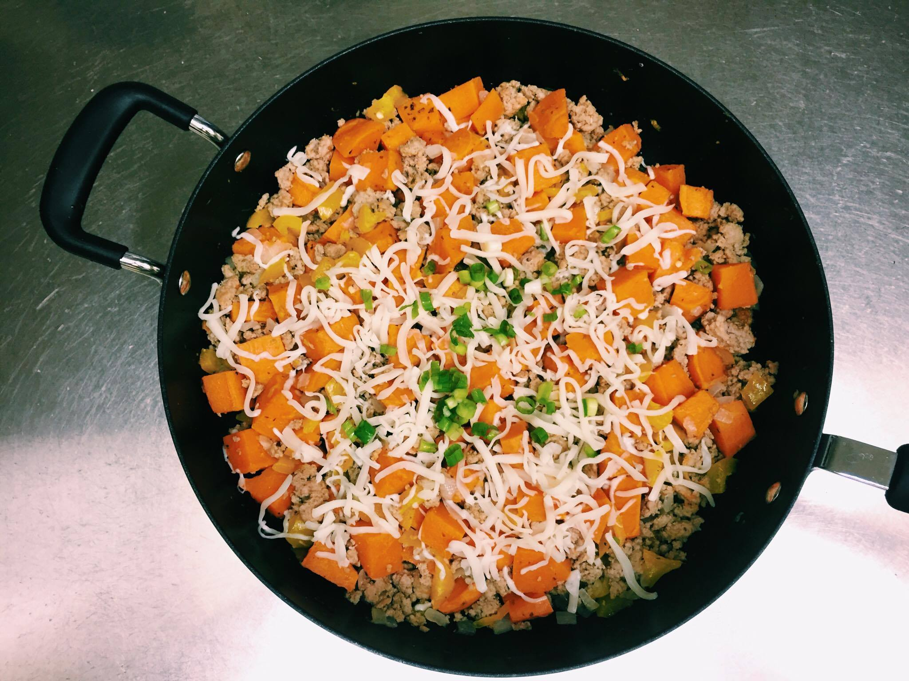

Chubsy's Kitchen
Sweet Potato Hash with Ground Turkey
My friend wanted to make something with ground turkey one day, so as per usual I went on Pinterest to see any easy recipes to make. The first picture that displayed was this sweet potato hash that was mixed in with ground turkey, and it looked so delicious that I had to make it for myself too! After work, I drove straight to Trader Joe's and picked up some fresh ingredients: sweet onions, bell peppers, sweet poatoes, and cheese.

I first chopped up the onions, sweet potatoes, and bell peppers into fine diced pieces. In a conventional oven, I sped up the cooking process of the sweet potatoes so I roasted them with some olive oil at 450 degrees for 10 minutes. While the sweet potatoes were being roasted, I sauteed the onions, bell peppers, and ground turkey in a large pan. When the turkey was almost cooked, I mixed in the sweet potatoes.


After the hash is finished, I took the pan off the stove and sprinkled mozzarella on top! I love cheese so I topped my hash with a load of cheese!

Earl Grey Chocolate Bundt Cake
A while ago, my boyfriend and I made earl grey creme brulee and ever since then I've been craving the essence of the aromatic lavender combined with caffeine.
I use sour cream in my recipe because it always creates the perfect soft texture in the cake, and I also add an extra earl grey tea bag or two for a stronger essence.
7 earl grey tea bags
1 cup hot water
1 3/4 cups all-purpose flour
1 teaspoon baking powder
1 teaspoon baking soda
1/4 teaspoon salt
1/2 cup unsalted butter at room temperature
3 eggs
1 1/2 cups granulated sugar
1/2 cup melted bittersweet chocolate
1/2 cup sour cream
7 earl grey tea bags
1 cup hot water
1 3/4 cups all-purpose flour
1 teaspoon baking powder
1 teaspoon baking soda
1/4 teaspoon salt
1/2 cup unsalted butter at room temperature
3 eggs
1 1/2 cups granulated sugar
1/2 cup melted bittersweet chocolate
1/2 cup sour cream
PRO TIP #1: If you want to speed up the butter temperature: Put the stick of butter on a plate, pour hot water in a glass bowl, pour it out, and cover butter with that bowl.
PRO TIP #2: To easily melt the chocolate without burning it in the microwave, put the chocolate in a bowl, pour hot water in another bowl with a smaller diameter, and place your chocolate over that bowl. Stir constantly for a minute or two until the chocolate just melts.
1) Preheat the oven to 350 degrees. Steep the tea bags in the hot water for 5-7 minutes, then take the tea bags out and let the liquid cool.
2) In a large bowl, mix the butter and sugar until smooth. Then, add in the eggs and mix one at a time.
3) Use another bowl to mix the dry ingredients together: flour, salt, baking powder, and baking soda.
4) Mix the dry ingredients with the butter mixture in increments of 4-5.
5) Mix in the chocolate, then mix in the sour cream and tea interchangeably.
Grease the bundt cake pan and pour in the batter. Bake for 35-40 minutes or until you can easily put a skewer stick into the cake without any batter sticking to the stick.
Let the cake cool for 5-10 minutes and flip it on a platter. I sprinkled powdered sugar on top of the cake, but it will also go well with icings and nuts. Enjoy!
Let the cake cool for 5-10 minutes and flip it on a platter. I sprinkled powdered sugar on top of the cake, but it will also go well with icings and nuts. Enjoy!